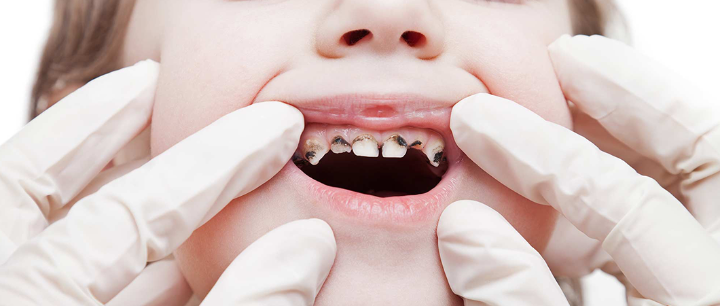
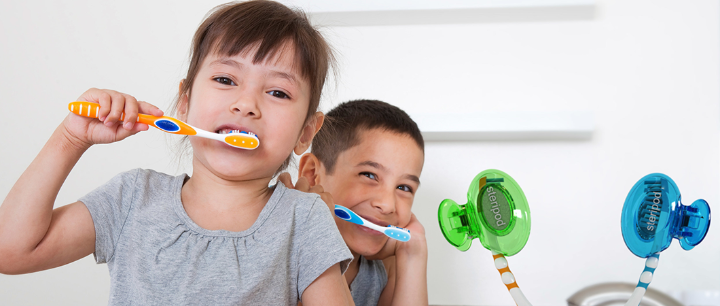
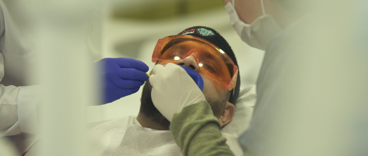
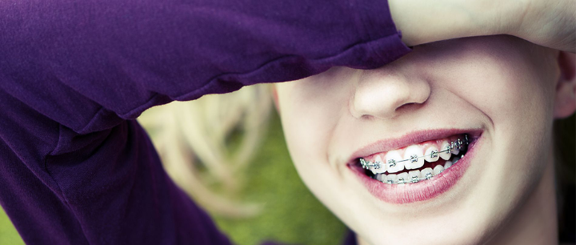
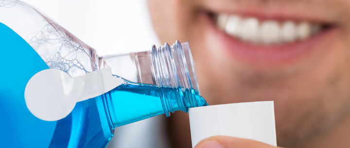
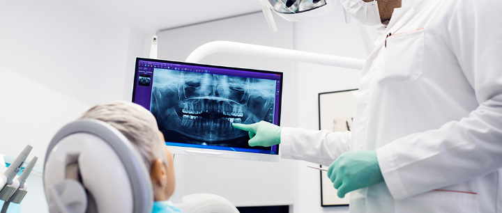

علاج وزراعة الأسنان
تعرَّف من خلال مقالاتنا على أحدث تقنيات علاج الأسنان، وأنجح الأساليب الوقائية للتمتع بأسنان صحيَّة قويَّة، إضافة إلى عمليات زراعة الأسنان، والجسور، والتقويم، وغيرها من المعلومات المتنوعة

علاج الأسنان في زمن كورونا .. نصائح وإرشادات
عند الحديث عن أساليب الوقاية من فيروس كورونا، والذي بات من المعروف ارتباطه الوثيق بالمجرى التنفسي والفم، لا بد من الإشارة بكل وضوح إلى احتمالية الإصابة بهذا الفيروس وغيره من الفيروسات والبكتيريا المضرة عبر إهمال صحة الفم وعلاج الأسنان.
جدول المحتويات
- زيارة طبيب الاسنان في زمن الكورونا
- نصائح للحفاظ على صحة الفم والأسنان
- مسكنات ألم الأسنان
- ما أسباب نزيف اللثة عند غسل الأسنان؟
- ما علاج حساسية الأسنان؟
- صحة الفم والأسنان للأطفال
- الإجراءات الوقائية في عيادات الأسنان
- ما هو العمر المناسب لتقويم الأسنان؟
- ما أضرار استخدام الفحم لتبييض الأسنان؟
- كيف يُستخدم غسول الفم؟
- أعراض تسوس الأسنان
- أهمية الفحص الدوري للأسنان
زيارة طبيب الاسنان في زمن الكورونا
يعد الفم مفتاح مجرى التنفس، وبوابته الرئيسة، حتى صار من المعلوم بالضرورة للجميع أن الفم هو أهم منفذ يدخل منه فيروس كورونا إلى الجسم، فبقدر حماية الإنسان لنفسه وسلامته عبر المحافظة على نظافته الشخصية يكون في مأمن من شر الإصابة بهذا الفيروس المستجد , لكن لايوجد اي خطر من مراجعة أطباء الأسنان في زمن كورونا لكن بعد التأكد من دكتور الأسنان يقوم بتعقيم كافة المعدات بعد وقبل كل مريض .
ننصحكم بمشاهدة هذا الفيديو لنصائح عند مراجعة اطباء الأسنان .هل الم الاسنان من اعراض كورونا ؟
لم يثبت حتى الان آلم الأسنان من بين اعراض فيروس كورونا ولكن مريض قد يشعر بآلام في كل انحاء الجسد فقط .
إقرا أكثر : أيهما أفضل لقاح كورونا أم المناعة الطبيعية؟
هل التهاب اللثة من اعراض الكورونا ؟
بناء على اخر المستجدات والبحوث الطبية اللتهاب اللثة ليس من اعراض كورونا , عند شعوركم بالتهاب اللثة ننصحكم بمراجعة الطبيب فورا وذلك لحمايتها من الإنحسار
نصائح للحفاظ على صحة الفم والأسنان
تتمثل أهم الأمور المساعِدة في الحفاظ على صحة الأسنان في:
- التنظيف الدوري للأسنان بعد كل وجبة طعام، وقبل النوم.
- استخدام المضامض الفموية المعروفة، شرط عدم المبالغة في استخدامها بشكل مستمر، ويمكن استبدالها أو الاستغناء عنها بالمضمضة بالماء والملح، فهي مفيدة للفم والأسنان وغير مضرة على الإطلاق حتى على المدى الطويل.
- الاهتمام بالغذاء الصحي والمفيد، وتجنب الأغذية المضرة.
- الإقلال من تناول الحلويات والإبعاد بين فترات تناولها قدر المستطاع.
يمكنك الإطلاع على الخدمات التي تقدمها علاجك في علاج الاسنان في تركيا
قبل وبعد علاج الأسنان
أطعمة مفيدة لصحة الأسنان
تنصح طبيبة الأسنان "الدكتورة ندى الأشقر" بتناول الغذاء الصحي بأنواعه، من خضروات وفواكه، وخاصة ما يحتوي منها على فيتامين (C) بشكل غني.
وأما بالنسبة للأطفال فيجب تناول حصة كافية من الكالسيوم، والذي يمكن الحصول عليه من بعض الأغذية المهمة، مثل الحليب والألبان والأجبان.

ما هي أكثر أنواع الطعام تسبباً لتسوس الأسنان؟
لعل من أكثر الأطعمة تسبباً لتسوس الأسنان هي: المعجنات والسكريات والحلويات.
ولذلك يُنصح بتجنب تناولها بكثرة، وإن كان لا بد من تناولها فلا بأس بمرة واحدة يومياً، مع المحافظة على نظافة الأسنان بشكل دائم.
اطلع على خدمات علاجك في حشو الأسنان في تركيا

كيف أعرف معجون الأسنان الأصلي والصحي المناسب لأسناني؟
جميع أنواع المعاجين المتوفرة في السوق مناسبة لتنظيف الأسنان، ولكن يحبَّذ اختيار أنواع المعجون الموافَق عليها من قبل جمعية أطباء الأسنان العالمية.
وأما في حال وجود التهاب لثوي أو حساسية فيُختار على حسب كل حالة اعتماداً على رأي الطبيب المختص.
كيف أختار فرشاة الأسنان المناسبة؟
من أهم المواصفات الواجب توفرها في فرشاة الأسنان:
- أن تكون الفرشاة ذات رأس صغير.
- ذات شعيرات مستقيمة وغير متعرجة.
- متوسطة الخشونة، ليست ناعمة ولا خشنة.
- ينصح أيضاً بتبديل الفرشاة كل 3 شهر.
فرشاة أسنان الأطفال
تنصح طبيبة الأسنان "الدكتورة ندى الأشقر" بتعويد الأطفال من الصغر على استعمال فرشاة الأسنان، وترغيبهم بها عبر اختيار فرشاة أسنان جذابة لهم، بحيث تكون على شكل دمية أو ذات شكل طريف محبَّب.

مسكنات ألم الأسنان
تعتبر آلام الأسنان من أشد وأقوى الآلام في جسم الإنسان، مما يضطر أكثر الناس إلى اللجوء للأدوية المسكنة بهدف التخفيف من الألم حال حدوثه.
ولعل من أفضل أنواع المسكنات لألم الأسنان هي: الايبوبروفين(Ibuprofen) والديبلوفين(Diplofen).
ولا بد من مراعاة عدم المبالغة بتناول كميات كبيرة من هذه المسكنات، بحيث لا تتجاوز الجرعات منه 3 حبات (جرعات) في اليوم الواحد، بواقع حبة واحدة كل 8 ساعات كحد أقصى.
تعتبر مسكنات الأسنان حلاً وإجراءً مؤقتاً فقط، فلا بد بعد ذلك من زيارة الطبيب وعلاج الأسنان بأقرب فرصة ممكنة.
تعرف على : عملية زراعة الاسنان ميزاتها و كيف تتم?
ما أسباب نزيف اللثة عند غسل الأسنان؟
- هناك نزيف طبيعي من اللثة لا يستدعي القلق، يحدث عقب تفريش الأسنان أحياناً.
- وهناك نزيف غير طبيعي أو مرضي، وغالباً ما يكون السبب وراء ذلك هو جير الأسنان (الجير: هو الترسبات التي تتراكم على الأسنان واللثة بسبب عدم التنظيف، أو التنظيف بصورة خاطئة لفترة طويلة).
العلاج المبدئي يكون من المنزل عبر تنظيف الأسنان بشكل صحيح بالمعجون والفرشاة، والمضمضمة بالماء والملح، بالإضافة إلى تدليك الأسنان واللثة بشكل خفيف بالأصبع السبابة.
ويجب الانتباه إلى استخدام فرشاة الأسنان بطريقة صحيحة، والسعي لزيارة طبيب الأسنان بأقرب فرصة ممكنة.
اقرأ اكثر : عملية زراعة اللثة ماهي؟ كل ما تريد معرفته عنها
ما علاج حساسية الأسنان؟
تحدث حساسية الأسنان بسبب حدوث مشاكل: التسوس أو تراجع اللثة أو تآكل مينا الأسنان.
وقد تحصل الحساسية بسبب تناول بعض الأدوية، أو الاضطراب الهرموني، أو عند سن المراهقة، وتنصح طبيبة الأسنان "الدكتورة ندى الأشقر" باستخدام معجون الأسنان الذي يعالج الحساسية، مع تجنب شرب السوائل الباردة والساخنة في الوقت نفسه.
ولكن الإجراء الأفضل يكون بمراجعة عيادة طبيب الأسنان، ووضع الفلوريد على الأماكن الحساسة، ويعاد هذا الإجراء كل فترة.
صحة الفم والأسنان للأطفال
من أهم النصائح الموجهة للأطفال، وللأهل بالمقام الأول:
- تعويد الأطفال على فرشاة الأسنان، وعلى طريقة استخدامها من الصِّغَر، واختيار فرشاة تجذب الطفل لاستعمالها.
- والاهتمام بغذاء الطفل بالإكثار من الفواكه والخضروات والأغذية التي تحتوي على الكالسيوم المهم للعظام والأسنان والجسم بشكل عام.
- زيارة طبيب الأسنان بشكل دوري، وخاصة في مرحلة بزوغ الأسنان، لتجنب أي مشاكل قبل حدوثها، أو علاجها بشكل مبكر في حال حدثت.
الإجراءات الوقائية في عيادات الأسنان
في ظروف كورونا الحالية يشتد التحذير من التجمعات في أي مكان كان، وفرَضَ الوضع الصحي الراهن التأكيد عن بعض النقاط الصحية التي لا بد من سردها هنا:
- من الأفضل عدم وجود أكثر من مريض واحد فقط في العيادة، وتجنب إحضار مرافقين، ويلزم ذلك التنسيق الصارم والصحيح في المواعيد.
- التعقيم والتنظيف لكل معدات العيادة وأدواتها بشكل دوري، وخاصة بعد كل مريض.
- لبس الواقيات الصدرية والنظارات والكمامات بشكل مستمر.
- إتلاف كل المواد القابلة للتلف بعد كل مريض.
- قياس دراجة حرارة المرضى قبل دخول العيادة، مع مراعاة تعقيم يدَي المريض عند باب العيادة.

ما هو العمر المناسب لتقويم الأسنان؟
بشكل عام، العمر المناسب لتقويم الأسنان هو بين سن 12 و 13 عاماً، بمعنى آخر: عند انتهاء أو اقتراب انتهاء بزوغ الأسنان الدائمة.
أما في حالات معينة، مثل بروز الفك السفلي أو بروز الفك العلوي، فيتوجب التدخل المبكر من الطبيب.
اقرأ اكثر : كيف تعمل أجهزة تقويم الأسنان وما هي انواعها

ما أضرار استخدام الفحم لتبييض الأسنان؟
لا ينصح أطباء علاج الأسنان باستخدام الفحم لتبيض الأسنان، لأنه يقوم بكشط طبقة من مينا الأسنان، مما قد يسبب مشاكل كثيرة وآلاماً حادة.
كيف يُستخدم غسول الفم؟
لا ينصح باستخدام غسول الفم باستمرار لأكثر من أسبوع واحد كحد أقصى، ويستخدم لحالات مخصَّصة فقط، مثل التهابات اللثة، ولكن يمكن استبداله بالماء والملح، مما يعطي المفعول نفسه وبدون آثار جانبية.

أعراض تسوس الأسنان
تتمثل أعراض تسوس الأسنان في:
- آلام ولمعة في الأسنان أثناء تناول الطعام.
- الشعور بفراغ بالسن الواحد أو بين الأسنان المتعددة، كأن يعلق بقايا الطعام في هذه الفراغات.
- وهناك نوع من التسوس يُدعى بالتسوس الصامت، وهو يحتاج لزيارة طبيب الأسنان لمتابعته وعلاجه.
أهمية الفحص الدوري للأسنان
تتضرر أسنان الإنسان أحياناً من حيث لا يدري، ثم تفجأه التسوسات والنخور على حين غرَّة، وهي التي كان بالإمكان علاجها بكل سهولة في مراحلها الأولى، لو أنه تم مراجعة الطبيب بشكل دوري مسبقاً.
لذلك ينصح الأطباء والمختصون بزيارة الطبيب بشكل دوري كل 6 أشهر على أقل تقدير، ولو لم يعاني الإنسان من ظهور أعراض أضرار واضحة.

يمكننا من خلال تواصلكم معنا تقييم حالة الأسنان لكم وتقديم الإستشارة المجانية وإعداد أفضل خطة علاجية بأسعار مناسبة.
المصدر: الأناضول , منظمة الصحة العالمية , اعراض فيروس كورونا , خطر فيروس كورونا
اطلع على أحدث المنشورات والأخبار الطبية
عمليات شفط الدهون بالفيزر في تركيا والأسعار 2021
يعتبر شفط الدهون بالفيزر من أفضل عمليات علاج السمنة المفرطة. تعرف معنا على مميزات وعيوب شفط الدهون بالفيزر وكيف تتم العملية وشاهد الفرق قبل وبعد في تركيا.
طرق علاج طول النظر في تركيا وأحدث التقنيات
يعاني الكثير من كبار السن وحتى البالغين من مرض طول النظر . سنتحدث في هذا المقال عن كيفية علاج طول النظر وأسباب هذا المرض ونسبة نجاح العلاج .
الفرق بين زراعة الشعر في ايران وتركيا 2021
بالرغم من أن أسعار زراعة الشعر بين تركيا وايران لا تختلف كثيرا إلا أن هنالك الكثير من الفروق التي قد تحدد لك الدولة الأفضل لزراعة الشعر فيها.
طرق علاج قصر النظر في تركيا وأحدث التقنيات
يعاني الكثير من الأطفال وحتى البالغين من مرض قصر النظر. سنتعرف في هذا المقال على أفضل طرق علاج قصر النظر وأسباب هذا المرض ونسبة نجاح العلاج .